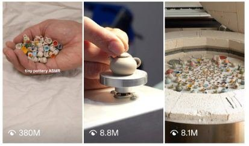

Back to all prompts
TINY HANDMADE CERAMIC ASMR
Storyboard & Reference

Download Reference{kind=link}
ULTRA MASTER PROMPT — TINY HANDMADE CERAMIC ASMR
Seedance 2.0 | 15 Seconds | 9:16 | Raw iPhone Realism
Create a highly realistic 15-second vertical 9:16 social-media video centered around EXTREMELY TINY HANDMADE CERAMIC COLLECTIBLES being handled by real adult human fingers. The video must feel like an authentic casual miniature-pottery creator casually recording their work at home with a phone, NOT like an advertisement, professional commercial, CGI render, AI-generated clip, cinematic production, product photoshoot, or polished studio video.
CORE CONCEPT LOCK
The recurring visual concept is:
“A normal-sized adult human hand interacts with absurdly tiny handmade ceramic objects while delicate ceramic clinks, taps, slides, drops and collisions create satisfying natural ASMR.”
The scale contradiction is the primary visual hook. Every object must look unbelievably small when compared with the fingers.
Use a NEW ORIGINAL MINIATURE CERAMIC COLLECTION for every generation.
Possible collection themes include tiny mushroom mugs, strawberry cups, cottage floral teapots, miniature espresso cups, pastel saucers, microscopic bowls, tiny pitchers, frog mugs, bee-pattern cups, daisy pottery, fruit-shaped mugs, seashell bowls, tiny breakfast sets, miniature vintage tea sets, tiny plant pots, tiny bakery plates, cat-face cups, botanical pottery, autumn ceramics, Christmas pottery, Halloween pottery, miniature kitchenware or another original handmade ceramic collection.
Do NOT reproduce recognizable proprietary designs or logos.
MINIATURE SCALE LOCK
Every hero ceramic object should normally measure approximately 7–20 mm visually.
The relationship between the fingers and pottery must immediately communicate extreme miniature scale.
A tiny mug should comfortably fit between the tip of the thumb and index finger.
A tiny saucer should be around the width of a fingernail.
Several tiny cups should fit inside one adult palm.
Never accidentally generate normal-sized tea cups.
Never let the ceramic objects increase or decrease in size during the video.
HANDMADE CERAMIC MATERIAL
The pottery must look genuinely handmade.
Use:
slightly uneven circular rims,
microscopic glaze bumps,
subtle handmade asymmetry,
small irregular handles,
minor color variation,
tiny brush-painted decorations,
slightly imperfect painted flowers,
natural glossy ceramic highlights,
very subtle kiln-fired texture,
realistic ceramic thickness,
visible hollow interiors,
properly attached handles,
tiny lids that physically fit their teapots,
slightly imperfect saucer edges.
Do NOT make the pottery look like plastic toys.
Do NOT make it look digitally perfect.
Use believable ceramic glaze colors such as:
warm ivory,
cream,
dusty pink,
powder blue,
sage green,
butter yellow,
pale peach,
soft lavender,
muted mint.
Patterns can include tiny wildflowers, daisies, strawberries, mushrooms, leaves, blueberries, bees, cherries, simple dots or subtle cottage-style brushwork.
ENVIRONMENT
Use a simple real-world home crafting environment.
Primary surface:
soft off-white or warm cream linen/cotton cloth with naturally irregular wrinkles, visible woven fibers and subtle shadows.
The fabric must NOT look perfectly ironed.
Keep the distant background soft and unobtrusive.
Possible blurred background clues:
wooden table edge,
ceramic work area,
small shelf,
natural window,
crafting supplies,
small pottery tray.
Background must never distract from the miniature ceramics.
LIGHTING
Use soft real-world daylight entering from one nearby window.
No dramatic lighting.
No perfect studio lighting.
No neon lights.
No rim-lighting setup.
No cinematic spotlight.
Allow realistic small exposure variations as the hand enters and leaves the frame.
Ceramic glaze should produce small believable daylight reflections rather than giant artificial highlights.
CAMERA IDENTITY LOCK
The footage must feel like RAW iPhone rear-camera footage recorded spontaneously by a real miniature pottery creator.
Camera characteristics:
vertical 9:16,
very close macro-style framing,
roughly 1x–2x close-phone perspective,
natural shallow depth of field caused by close focusing,
minor autofocus breathing,
tiny exposure corrections,
subtle handheld micro-shake,
small framing imperfections,
occasional momentary soft focus,
realistic smartphone sharpness,
natural phone dynamic range,
no artificial film grain,
no cinematic color grading,
no perfect stabilization.
The recorder remains unseen.
No face appears.
Only hands/fingers may enter the shot.
Camera should mostly stay in approximately the same macro position so the physical interactions remain easy to understand.
HUMAN HAND REALISM
Show one believable adult hand or fingertips.
Hands must have:
five anatomically correct fingers,
realistic fingernails,
natural skin pores,
small creases,
subtle fingerprint texture,
natural knuckle folds,
realistic pressure when gripping tiny objects.
Fingertips must physically contact the pottery.
Objects must NEVER float between fingers.
Avoid glamorous hand-model styling.
Hands should look ordinary and natural.
EXACT 15-SECOND RETENTION STRUCTURE
0.0–2.0 SEC — IMPOSSIBLE SCALE HOOK
Begin immediately with a visually irresistible miniature-scale reveal.
NO introduction.
NO empty establishing shot.
A real adult palm is already visible holding approximately 20–35 extremely tiny handmade ceramic pieces.
Show a varied collection such as miniature mugs, small teapots, tiny bowls and microscopic saucers.
Fill a large portion of the frame with the hand so viewers instantly understand how unbelievably tiny the pottery is.
Allow one or two pieces to shift slightly against each other, creating the first delicate ceramic clicks.
The first frame itself must create:
“What am I looking at?”
“These are incredibly tiny.”
“I want to see what happens.”
2.0–5.0 SEC — FIRST CERAMIC ASMR PAYOFF
The hand slowly tilts toward the linen surface.
The tiny pottery begins sliding naturally across the palm.
Pieces fall individually rather than moving as one artificial blob.
Several mugs tumble.
One tiny teapot rotates once.
Small cups collide.
Tiny handles make contact.
A few pieces lightly bounce before settling into the folds of the linen.
Use realistic gravity.
Nothing explodes outward.
Nothing moves magnetically.
Create crisp delicate sounds:
tik,
tink,
clink,
tiny ceramic taps,
soft linen contact.
This is the first major satisfying moment.
5.0–7.5 SEC — HERO OBJECT DISCOVERY
After the pile settles, the thumb and index finger naturally search through it.
Pick ONE particularly charming hero object.
Example:
a miniature mushroom mug,
tiny strawberry cup,
micro floral teapot,
frog-shaped cup,
small cottage teacup,
tiny cherry pitcher.
Lift it close to the camera.
The background pile naturally falls out of focus.
Rotate the object gently between fingertips approximately 20–40 degrees to reveal its handmade painted detail.
Do NOT transform or morph the design during rotation.
Keep the exact same object.
Allow natural autofocus to briefly adjust toward the hero ceramic.
7.5–10.0 SEC — PRECISION CERAMIC CLINK
The fingers slowly lower the hero ceramic onto its matching tiny saucer.
The base physically contacts the saucer.
At the exact contact moment produce one satisfying delicate:
“clink.”
The object remains stationary after placement.
Place or adjust another complementary tiny ceramic beside it.
Use precise believable fingertip movement.
This section should feel calm, tactile and satisfying.
10.0–12.8 SEC — SECOND VISUAL/ASMR REWARD
Introduce a second miniature pottery category.
Example:
a small handful of microscopic saucers,
tiny dessert plates,
mini bowls,
micro lids,
small espresso cups.
The hand releases approximately 8–15 pieces beside the existing collection.
They should fall at slightly different times and angles.
Some overlap.
Some settle upside down.
Some lean against another piece.
Some remain face-up revealing tiny painted flowers.
Use another cluster of delicate ceramic sounds:
clink-clink,
tik,
tap,
tiny scrape.
The second action prevents visual fatigue and gives the viewer another satisfying payoff before the ending.
12.8–15.0 SEC — COLLECTIBLE PAYOFF + LOOP
Create an attractive but naturally imperfect mini arrangement in the foreground.
Feature THREE clearly recognizable hero pieces.
Example:
one mushroom mug on saucer,
one floral miniature teapot,
one tiny pastel espresso cup.
Keep dozens of scattered ceramic pieces behind them.
Do NOT arrange everything perfectly.
The scene must still feel like a real creator casually handling miniature pottery.
During approximately the final 0.5–0.8 second, one finger reaches toward another attractive ceramic in the background as though the creator is about to pick it up.
CUT before the object is fully picked up.
This creates a natural looping sensation back toward the opening interaction.
OBJECT PHYSICS LOCK — EXTREMELY IMPORTANT
All miniature ceramic pieces are rigid solid physical objects.
Every object must preserve:
the exact same size,
exact same shape,
exact same glaze,
exact same painted artwork,
exact same handle,
exact same lid,
exact same rim,
exact same material
throughout the entire shot.
When falling:
gravity determines movement.
When hitting another ceramic object:
the object should rotate, bounce or settle according to physical contact.
When landing on linen:
movement should stop naturally because of fabric friction.
No object may teleport.
No object may appear spontaneously.
No ceramic object may dissolve.
No mug may become a teapot.
No painted flower may change into another pattern.
No object may merge with another.
No ceramic may deform like rubber.
No handles should disappear.
No pottery should pass through another piece.
AUDIO MASTER LOCK
Audio is critically important.
Do NOT use background music.
Do NOT add cinematic soundtrack.
Do NOT add narration.
Do NOT add artificial whooshes.
Record only believable close-range room sound and miniature pottery ASMR.
Primary audio:
small ceramic-on-ceramic clinks,
tiny porcelain-like taps,
soft ceramic scraping,
cups gently knocking together,
fingertips brushing ceramic,
soft linen rustling,
faint natural room ambience.
The tiny ceramic sounds must be delicate and appropriately scaled.
They should NOT sound like full-sized dinner plates crashing together.
They should NOT sound metallic.
They should NOT sound like glass bottles.
Keep room tone extremely subtle.
Audio timing must match visible physical contact exactly.
VIRAL RETENTION RULES
Every approximately 1–2 seconds should provide a new micro-reward.
Use:
scale reveal,
movement,
falling pottery,
interesting design,
hero-object reveal,
precision clink,
second spill,
final arrangement.
Never spend multiple seconds showing an inactive pile.
Never use a long establishing shot.
Never begin with text.
The viewer should understand the concept without narration.
STYLE IDENTITY
The emotional response should combine:
cute,
tiny,
unexpected,
handmade,
cozy,
collectible,
tactile,
satisfying,
calming,
curiosity-inducing.
The video must feel like a real small artisan creator posted it directly to TikTok, Instagram Reels, Facebook Reels or YouTube Shorts.
Do not make it look deliberately “viral.”
Its casual authenticity should make it viral.
INFINITE VARIATION ENGINE
For every new generation, CHANGE the following variables while preserving the master identity:
ceramic collection theme,
hero mug shape,
painted motif,
primary glaze palette,
number of pottery pieces,
first-handful composition,
second-drop object type,
hero object,
matching saucer,
final three-object arrangement,
linen wrinkle pattern,
window-light direction,
hand entry direction,
object locations,
pile arrangement,
exact fall order,
final loop object.
Every video should feel like another upload from the SAME miniature-pottery niche but should NOT appear to be a duplicate of an earlier generation.
STRICT NEGATIVE PROMPT
No CGI appearance, no 3D-render look, no plastic toys, no cartoon, no anime, no illustration, no fantasy world, no giant pottery, no normal-size coffee mug, no warped fingers, no extra fingers, no missing fingers, no fused fingers, no duplicated fingers, no mutated hands, no floating objects, no teleporting objects, no morphing pottery, no melting ceramics, no rubber ceramics, no changing patterns, no changing colors, no disappearing handles, no detached handles unless physically broken, no spontaneous object generation, no fused cups, no interpenetrating objects, no impossible gravity, no magnetic movement, no unnatural bouncing, no chaotic explosion, no fake glossy plastic surface, no perfect factory symmetry, no sterile studio background, no professional product photography, no cinematic depth-of-field simulation, no dramatic lens flare, no artificial bloom, no fake HDR, no oversaturation, no dramatic camera orbit, no drone movement, no aggressive zoom, no rapid camera shake, no slow motion, no timelapse, no speed ramp, no scene teleportation, no visible camera, no visible phone, no human face, no talking person, no subtitles, no captions, no logos, no watermark, no text overlay, no background music, no voiceover.
FINAL GENERATION COMMAND
Generate ONE continuous believable 15-second miniature handmade ceramic ASMR video using the above rules.
Prioritize, in this exact order:
RAW REAL-WORLD PHONE AUTHENTICITY
EXTREME MINIATURE SCALE
CORRECT HAND + OBJECT PHYSICS
CERAMIC OBJECT CONSISTENCY
DELICATE SYNCHRONIZED ASMR
STRONG FIRST-SECOND HOOK
NEW MICRO-REWARD EVERY 1–2 SECONDS
HANDMADE IMPERFECTIONS
NATURAL DAYLIGHT
SATISFYING LOOPABLE ENDING
The final result should look indistinguishable from a real person filming their genuine handmade miniature ceramic collection at home on a phone.